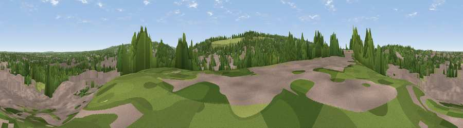

Viewpoint near Guildford
#41756 in England · top 64% of its area beats it · near GuildfordThe view, rendered

A 360° render of this exact spot computed from the terrain model, tree cover and land cover — summer colours, afternoon light, calibrated against photographs of famous viewpoints. Real trees, hedges and buildings will differ in detail.
The panorama
Grey silhouette: terrain skyline in each direction (720 bearings, Earth curvature and refraction included). Dashed green: skyline with trees (+15 m) and buildings (+8 m) as obstacles. Blue strip: how far the ground is visible on each bearing.
Where the view opens
Wedge length = distance to the farthest visible ground on that bearing (vegetation-aware). Rings at 10, 25 and 50 km.
What fills the view
47% built-up · 35% woodland · 17% grassland ·
Angular shares of the visible panorama (visual magnitude), not map area. Landscape diversity 0.46 (0–1 Shannon).
Key numbers
More beautiful places nearby
The staircase of upgrades: each row has a higher view potential than everything closer. Driving times are estimates from straight-line distance, calibrated against real road routing — check an actual route before setting out.
| Place | Direction | Drive | Score |
|---|---|---|---|
| Viewpoint near Fairlands | NW · 1 km | ~3 min | 38.6 |
| Viewpoint near Guildford | SW · 2 km | ~5 min | 65.4 |
| Viewpoint near Compton | WSW · 3 km | ~7 min | 66.7 |
| Viewpoint near Hascombe | SSE · 11 km | ~22 min | 69.5 |
| Viewpoint near Hascombe | S · 12 km | ~22 min | 70.1 |
| Viewpoint near Coldharbour | ESE · 17 km | ~29 min | 71.3 |
| Viewpoint near Fernhurst | SSW · 22 km | ~36 min | 75.1 |
| Barlavington Down | S · 35 km | ~53 min | 77.3 |
51.24135, -0.58924 · source: screening · position refined by local search. Computed location — check access rights before visiting.